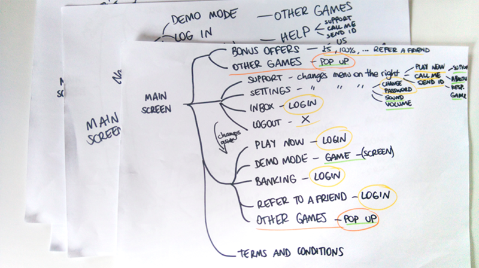

InTouch Games registration process
Synopsis
Sprint project to improve the registration process for an online gaming service. Through the construction of user flows and journeys, I helped the team understand where the weak points were and outline solutions. Then, applying best practice, I created a new flow along with annotated wireframes and mockups to deliver to the developer team.
The key of this projects were the forms. Forms are always a challenge when designing an experience, but a necessary challenge. Applying best practice consistently it is possible to ensure a frictionless experience even with the longest form.
Skills
- Competitor analysis
- Information architecture
- Personas
- Storyboards
- User flows
- User journeys
- Wireframing
- Visual design
- Prorotyping
Competitive analysis
To understand the market and the situation of the company compared to others, I chose three direct competitors: two gambling platforms (Ladbrokes and Casino 888) and a website for playing free games online (games.co.uk).
Currently, mFortune was well positioned compared to its competitors. The only weaknesses were UX best practice and availability in the Google Store.
Information architecture
In order to understand the existing design, I created a sitemap of the app. Next, I conducted card sorting to find a more intuitive and simple sitemap.

This was the sitemap of the app:
- The new user was free to navigate through the sections in green.
- Those marked in yellow required the user to login.
- The orange sections opened a pop up window.
Detected issues:
The proposed sitemap is simplified:

- Sections were organised depending on whether they were accessible or not for a new user.
- Sections were joined to simplify the landing page.
- The number of sections was reduced to improve the navigation.
Improvements:
The user persona
The challenge was to improve the engagement for new users, especially those who are less likely to finish the registration process. For this reason I created two personas, one representing the current audience of the product and another one representing the new possible audience.

I focused on Marisa as she would be most difficult to engage.
Marisa is at the library taking a break from studying and finds a link to mFortune on social media.
The user journey
Previous user journey:
Improved user journey:

Mockups
- Key points:
- The number of buttons in the homepage is reduced.
- Navigation is consistent and colour is used to differentiate between primary and secondary actions.
- Buttons that control frequent actions, like "Help", "Login", "Sound on/off" and "Vibrate" appear at the top.
- Once the user has logged in, "Register to play" changes to "Play now" and "Bonus" appears.
- The form is simplified to one screen and best practice is followed.
- The progress is shown in a clearer way.
- Inclusion of a "Cancel" button in the process, as an escape route to reduce the feeling of stress.